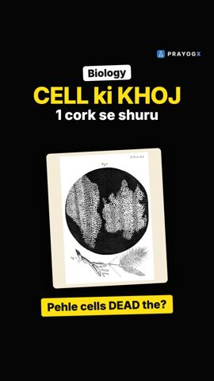
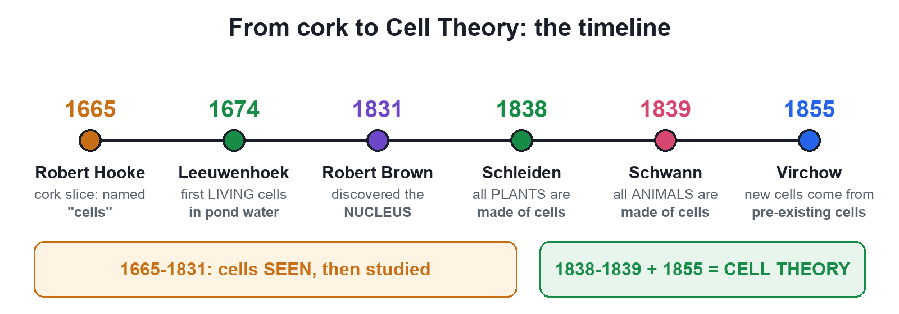
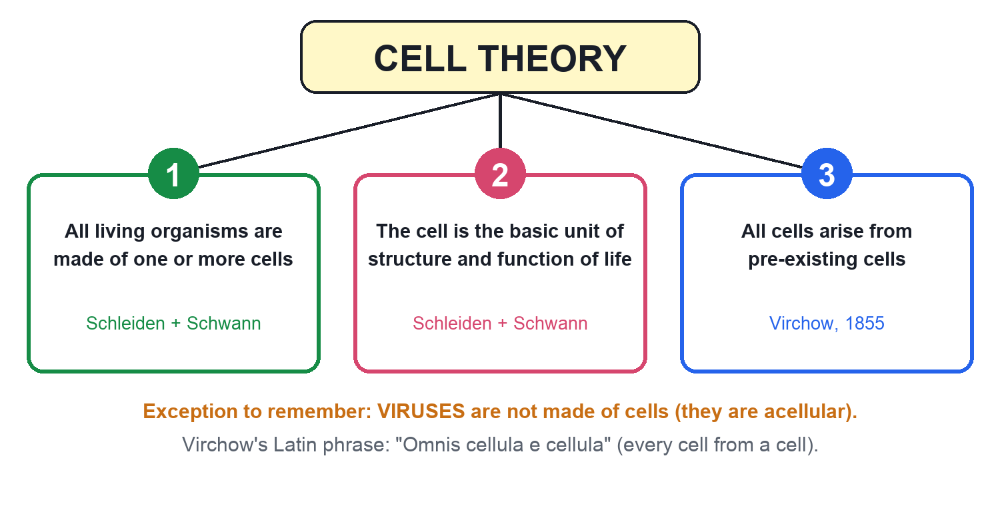
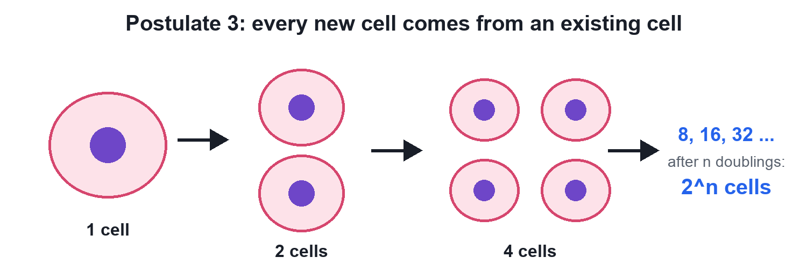
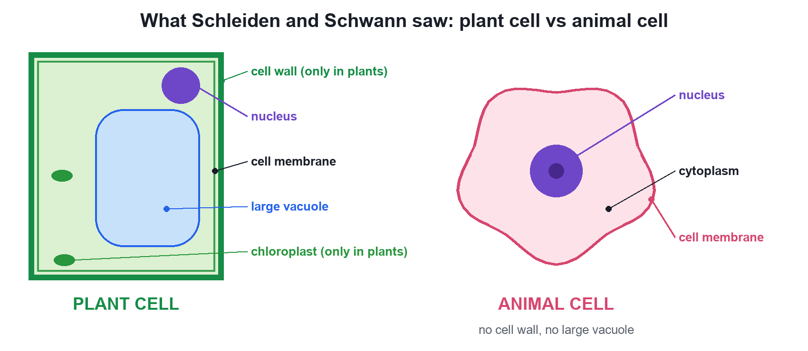
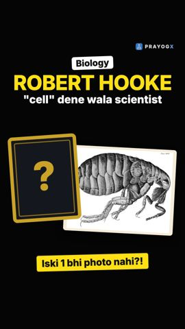
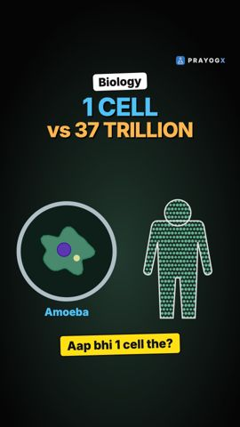

Cell Theory
Video not playing? Watch on Instagram · YouTube
Your body has about 37 trillion cells. Three scientists showed that every living thing is built from cells, and every cell comes from another cell.
Download the short notesPDF, 839 KB · solved examples, practice set and answer key Up next in this chapter

Discovery of the CellIn 1665 a thin slice of cork showed tiny boxes Robert Hooke called cells. Then came living cells (1674) and the nucleus (1831).BiologyKey points
- All living organisms are made of one or more cells (Schleiden 1838, Schwann 1839).
- The cell is the basic structural and functional unit of life.
- All cells arise from pre-existing cells (Virchow 1855, "Omnis cellula e cellula").
- Exception: viruses are not made of cells.
How the theory was built

In 1838 the botanist Matthias Schleiden concluded that all plants are made of cells. In 1839 the zoologist Theodor Schwann found the same for animals and called the cell the basic unit of life. In 1855 Rudolf Virchow added the missing piece: new cells come only from the division of existing cells.
The three postulates


Plant and animal cells

Limits: viruses are acellular, and the theory does not explain how the very first cell formed.
Quick quiz
4 questions. Choose an answer for each, then submit to see your score and the explanations.
More from The Fundamental Unit of Life

Robert Hooke and the Discovery of CellsThe man who named the cell left no surviving portrait. Meet Robert Hooke, his book Micrographia, his lamp-lit microscope and his count of cork cells.Biology
Unicellular and Multicellular OrganismsAn amoeba is one cell; you are about 37 trillion. In one, a single cell does everything; in the other, cells share the work.Biology